6.1. Uncertainty in drought indicators for national monitoring#
Production date: 2026-02-26.
Please note that this repository is used for development and review, so quality assessments should be considered work in progress until they are merged into the main branch.
Dataset version: 1.0.
Produced by: Enis Gerxhalija, Olivier Burggraaff (National Physical Laboratory).
🌍 Use case: Monitoring drought on a national scale using reanalysis-based drought indicators#
❓ Quality assessment question#
What is the ensemble spread for drought indicators in the ERA5–Drought dataset and how does this propagate into drought monitoring levels?
Can the ensemble in ERA5–Drought provide additional information for operational drought monitoring, compared to only using the deterministic reanalysis?
Drought and wet periods have far-reaching environmental, societal, and economic impacts. In the United Kingdom, the record-breaking hot and dry spring and summer of 2025 caused harvest losses worth more than £800 million [ECIU+25]. An 18-month drought in Brazil in 2023–24, the most severe since monitoring began in 1954, led to 720 health centres in affected areas becoming non-operational [UNICEF+24]. Extreme rainfall killed hundreds of people and caused billions of € in damages in Spain in 2024 [Franch-Pardo+25]. Climate change is thought to be the primary driver behind the increase in drought and wet periods since the 1950s [IPCC+23], and this trend is expected to continue into the future.
Given these impacts, monitoring drought and wet periods is vital. Several quantitative proxies have been developed to aid in this monitoring, generally based on a combination of total precipitation, soil moisture, evapotranspiration, and surface (air) temperature. Two widely-employed indices are the Standardised Precipitation Index (SPI) [McKee+93] and Standardised Precipitation-Evapotranspiration Index (SPEI) [Vicente-Serrano+10]. Both operate on the same principle, namely quantifying the amount of precipitation over a given time frame at a given location relative to its historical climatology. For example, an SPI value of –1 corresponds to a precipitation that is 1 standard deviation below the mean, for that site and time frame. This probabilistic approach lends itself to statements on the occurrence rate of extreme events [McKee+93]. SPEI expands on SPI by including not just gains from precipitation, but also losses due to evapotranspiration. SPI and SPEI can be evaluated over different accumulation periods to probe phenomena at different time scales [Keune+25, EDO+25]:
1, 3 months: soil moisture, flow in smaller creeks.
6, 12 months: reservoir storage, stream flow.
24, 36, 48 months: reservoir and groundwater recharge.
ECMWF now provide SPI and SPEI indices derived from their fifth-generation reanalysis ERA5, which assimilates meteorological data and models on a global ~31 km grid going back to 1940 [Soci+24, Hersbach+20], in the ERA5–Drought dataset [Keune+25], available from the Climate Data Store (CDS). ERA5 is a well-established dataset, widely used across many sectors including drought monitoring and forecasting [Evenflow+24]; quality assessments for ERA5 itself can be found in Reanalysis. The derived dataset ERA5–Drought can be a valuable resource for applications in many sectors, since it can be used out of the box, freeing users from the need to find and process the underpinning meteorological data themselves. ERA5–Drought provides monthly SPI and SPEI for 7 different accumulation periods, interpolated to a 0.25° × 0.25° grid.
A key strength of ERA5 and ERA5–Drought is the inclusion of an ensemble that can be used to estimate (part of) the uncertainty in the data. Its 10 members are generated by running the ERA5 data assimilation and forecast model at a coarser resolution, 9 of them with perturbed inputs representing the input data uncertainty, and one control member with the same inputs as the higher-resolution deterministic reanalysis to provide a representative comparison. ECMWF’s ensemble system EDA is described in detail in [Isaksen+10]; its implementation for ERA5 in [Hersbach+20]. The latter writes that “[t]he ERA5 EDA spread among the ten ensemble members can be interpreted as a measure for the uncertainty in the [higher-resolution reanalysis] estimates” and “should mainly be used as a guide for the quality of representing the correct synoptic situation at a given time, rather than for long-term and/or large-scale averages.” Consequently, while the ensemble spread should not be considered an uncertainty in the metrological sense, it can provide useful information on part of the uncertainty in the data. In ERA5–Drought, SPI and SPEI introduce additional complexity by accumulating over time, regridding in space, and using a 30-year climatology reference window. For a metrological guide to uncertainty propagation with ensemble/Monte Carlo methods, we refer the reader to [JCGM+08].
This quality assessment examines the uncertainty in SPI and SPEI values from the ERA5–Drought (Monthly drought indices from 1940 to present derived from ERA5 reanalysis) dataset with a focus on national drought monitoring. We investigate the ensemble spread in SPI and SPEI across one country (Australia) as well as the agreement between the deterministic reanalysis and individual ensemble members in terms of declaring drought states (such as “extremely dry”). In doing so, we assess whether the ensemble spread is sufficiently small for these data to underpin a drought monitoring programme, and how the ensemble can provide additional information for such programmes.
📢 Quality assessment statement#
These are the key outcomes of this assessment
The ensemble in ERA5–Drought provides useful information on the spread and thus uncertainty in SPI/SPEI drought indicators. The ensemble spread should be treated as a first-order estimate for the uncertainty, not a metrological uncertainty budget.
The ensemble spread in drought indicators is generally small (≤0.24 for SPI and ≤0.15 for SPEI in this case study) for pixels that comply with the included quality flags.
In most cases, the majority of ensemble members agree with the deterministic reanalysis in declaring a drought level. Therefore, ERA5–Drought can be used confidently for monitoring drought. The ensemble can be used to measure said confidence.
Disagreements between ensemble members and the deterministic reanalysis are the result of propagated uncertainty from ERA5 combined with methodological factors, most prominently the difference in spatial resolution between ensemble and deterministic reanalysis.
The ensemble provides new opportunities for more nuanced monitoring of drought, compared to a binary classification based on the deterministic reanalysis alone. For example, triggers could be set based on the number of ensemble members that pass an SPI or SPEI threshold to capture a wider and smoother area of potential drought and provide early warnings.
📋 Methodology#
This quality assessment examines the uncertainty in SPI and SPEI values from the ERA5–Drought (Monthly drought indices from 1940 to present derived from ERA5 reanalysis) dataset with a focus on national drought monitoring.
This notebook provides and runs through Python code for downloading the deterministic reanalysis and ensemble for SPI and SPEI from ERA5–Drought with the included quality flags, analysing the spread in the ensemble and its agreement with the deterministic reanalysis, and assigning drought warning levels (e.g. “severe drought”) across a country (here Australia) during a known drought event. This calculation is performed individually for each ensemble member, thus propagating the distribution of meteorological data (ERA5) through SPI/SPEI (ERA5–Drought) into the derived product (drought level). As noted above, this is not a full metrological uncertainty analysis and should be considered a first-order estimate.
This notebook is set up so that the test country and dates are easily customised, so you can download it and apply it to your preferred domain.
Import all required libraries.
Define helper functions.
Download SPI and SPEI from ERA5–Drought.
Download quality flags from ERA5–Drought.
Pre-process data.
Analyse SPI and SPEI geospatially with and without quality flags.
Assign drought levels to the deterministic reanalysis and individual ensemble members.
Assess the uncertainty in drought levels by comparing the reanalysis and ensemble.
📈 Analysis and results#
1. Code setup#
Note
This notebook uses earthkit for downloading (earthkit-data) and visualising (earthkit-plots) data. Because earthkit is in active development, some functionality may change after this notebook is published. If any part of the code stops functioning, please raise an issue on our GitHub repository so it can be fixed.
Import required libraries#
In this section, we import all the relevant packages needed for running the notebook.
Helper functions#
This section defines some functions and variables used in the following analysis, allowing code cells in later sections to be shorter and ensuring consistency.
Data (pre-)processing#
The following functions handle downloading data in specific circumstances, e.g. a geographical or temporal subset:
The following functions aid in processing quality flag data from ERA5–Drought into a standard format:
Categorising SPI and SPEI#
The following cell defines categories for SPI and SPEI values, e.g. “severe drought”.
Quality flags#
The following functions apply the quality flags included in ERA5–Drought, such as the probability of zero precipitation and the Shapiro–Wilk normality test:
Statistics#
The following functions perform statistics on the ensemble datasets, both calculating the mean and standard deviation in ensemble members, and the drought severity category they fall in.
The following functions count the number of (mis)matches between the deterministic reanalysis and invididual ensemble members and tabulate the result:
Visualisation#
The following cell defines earthkit-plots styles for the indicators. These styles define the colour maps and colour bar ranges for each quantity.
The following cell contains some base helper functions (e.g. displaying in Jupyter Notebook or Jupyter Book style, adding textboxes with consistent formatting, etc.):
The following functions are also base helper functions, but specific to geospatial plots. Country boundaries are downloaded from the Geographic Information System of the Commission (GISCO) through earthkit-plots, and are © EuroGeographics.
The following functions display geospatial comparisons of the deterministic reanalysis and ensemble member mean/spread:
The following functions display geospatial comparisons of the deterministic reanalysis and ensemble members in terms of SPI / SPEI categories:
2. Download data#
General setup#
This notebook uses earthkit-data to download files from the CDS. If you intend to run this notebook multiple times, it is highly recommended that you enable caching to prevent having to download the same files multiple times. If you prefer not to use earthkit, the following requests can also be used with the cdsapi module. In either case (earthkit-data or cdsapi), it is required to set up a CDS account and API key as explained on the CDS website.
In this example, we will be looking at a single drought event in one country, namely Australia. This country is defined in the following cell and can be edited when running this notebook yourself:
Identify a drought event#
We use EM-DAT [Delforge+25], the international disaster database maintained by UC Louvain’s Centre for Research on the Epidemiology of Disasters (CRED), to identify historical drought events in our chosen country (here Australia) and pick one to analyse further. EM-DAT data can be downloaded from https://public.emdat.be/ This requires registration with an account and appropriate licence. For this notebook, we assume you have downloaded data for your chosen country already. The filename can be specified below:
| Start Year | Start Month | Location | End Year | End Month | |
|---|---|---|---|---|---|
| DisNo. | |||||
| 1967-9012-AUS | 1967 | NaN | South-East | 1969 | NaN |
| 1974-9100-AUS | 1974 | 12.0 | Central New South Wales | 1975 | 1.0 |
| 1976-9126-AUS | 1976 | NaN | Victoria, South Australia, Southern Inland New... | 1976 | NaN |
| 1976-9127-AUS | 1976 | 5.0 | Southwest of Western Australia | 1976 | 8.0 |
| 1978-9200-AUS | 1978 | NaN | Southern Queensland, New South Wales, Victoria... | 1978 | NaN |
| 1981-9188-AUS | 1981 | NaN | Queensland, New South Wales, Victoria States | 1982 | NaN |
| 1991-9697-AUS | 1991 | NaN | Western, South | 1991 | NaN |
| 1992-9543-AUS | 1992 | 12.0 | Queensland | 1995 | 12.0 |
| 2006-9554-AUS | 2006 | 10.0 | NO DATA: all country has been selected | 2006 | NaN |
| 2002-9611-AUS | 2002 | 4.0 | Queensland, New South Wales provinces | 2002 | 11.0 |
| 2018-9258-AUS | 2018 | 1.0 | New South Wales, Victoria , Queensland | 2018 | 8.0 |
Based on the table above, we choose the 2018 drought event, which has well-defined start and end dates and spans a large part of the country. In the following cell, we manually define the dates for the analysis, which can be modified when running this notebook yourself:
Setup for CDS downloads#
We will be downloading different types of data (drought indicators and quality flags, deterministic reanalysis and ensemble) in this notebook. CDS data requests take the form of dictionaries in Python. When making multiple requests, it is convenient to define some constants and set up template requests with default parameters. In this section, we define our template containing those parameters that are constant between datasets: the domain in time and space. This way, these are guaranteed to be consistent between downloads and only need to be changed in one place if you wish to modify the notebook for your own use case.
We want to download SPI, SPEI, and the associated quality flags for the 1- and 12-month accumulation windows. The country and timespan were defined in the previous section; the variables and accumulation periods are defined in the following cell, and can be edited when running this notebook yourself:
The CDS request template is then defined using the values specified above. Additional information to download specific data variables will be mixed into this template in the following sections.
Download SPI and SPEI#
We start by downloading the drought indicators (SPI and SPEI) for the specified dates:
The ensemble members in ERA5–Drought are represented by the realization dimension:
Download quality flags#
ERA5–Drought includes quality flags that can be used to mask low-quality data. The first is the probability of zero precipitation (p0), which counts the number of years in the reference period (1991–2020) in which there was 0 precipitation in a given calendar month (e.g. January). This flag is only applicable to SPI, where the authors recommend masking any data with p0 > 0.1 [Keune+25]. The second is the normality α, derived using the Shapiro–Wilk test [Shapiro+65]. This α quantifies how well the computed SPI or SPEI values in the reference period (1991–2020) are described by a standard normal distribution. The mask in ERA–Drought uses a threshold of 0.05, meaning points where α < 0.05 are rejected.
The three quality flags (p0 for SPI, α for SPI, and α for SPEI) are downloaded from the CDS for the reanalysis and ensemble. Note that ERA5–Drought provides the quality flags with timestamps for 2020 (2020-01-01, 2020-02-01, etc.) to fit into the datetime format, which requires a year and day. However, the flags are applicable to the corresponding calendar month (January, February, etc.) across the entire timespan.
Note that quality flags for different accumulation periods are provided under a common variable name (pzero or significance),
with references to the specific drought index and accumulation period in the filename and metadata.
When downloading quality flags for multiple accumulation periods at the same time,
xarray and earthkit-data
may automatically merge quality flags for different accumulation periods into a single array, or overwrite one with another.
To mitigate this,
quality flags must be downloaded separately for each accumulation period, renamed, and merged together, rather than downloaded for all simultaneously.
Monitoring drought across a wide area requires robust statistics. Therefore, we mask all ensemble members if any are flagged (for a particular location and time) to avoid biasing the statistics – for example, the p0 flag is more likely to be triggered by drier ensemble members, so only masking those could introduce a wet bias in the result.
3. Drought indicators#
We examine the distribution of SPI and SPEI to get an intuition for circumstances in this particular drought event and the spread of the ensemble. First, this is done without applying quality flags:
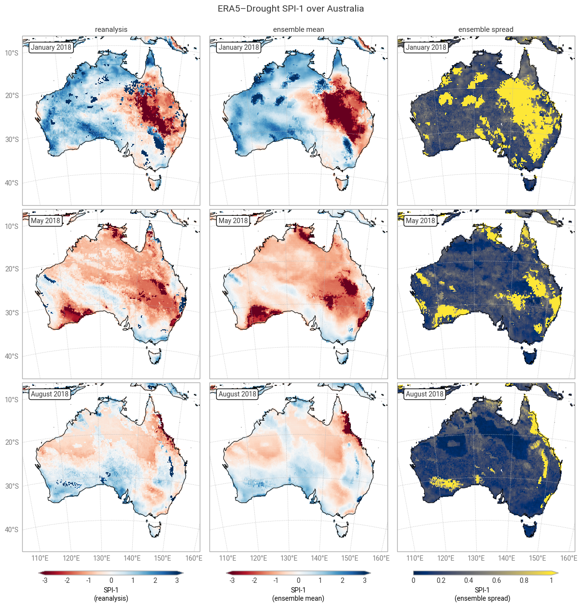
Fig. 6.1.1 SPI-1 over Australia at the start (top), middle, and end (bottom) of the selected drought event, showing the deterministic reanalysis (left) and the per-pixel mean (middle) and spread (right) of the ensemble members. Quality flags have not been applied.#
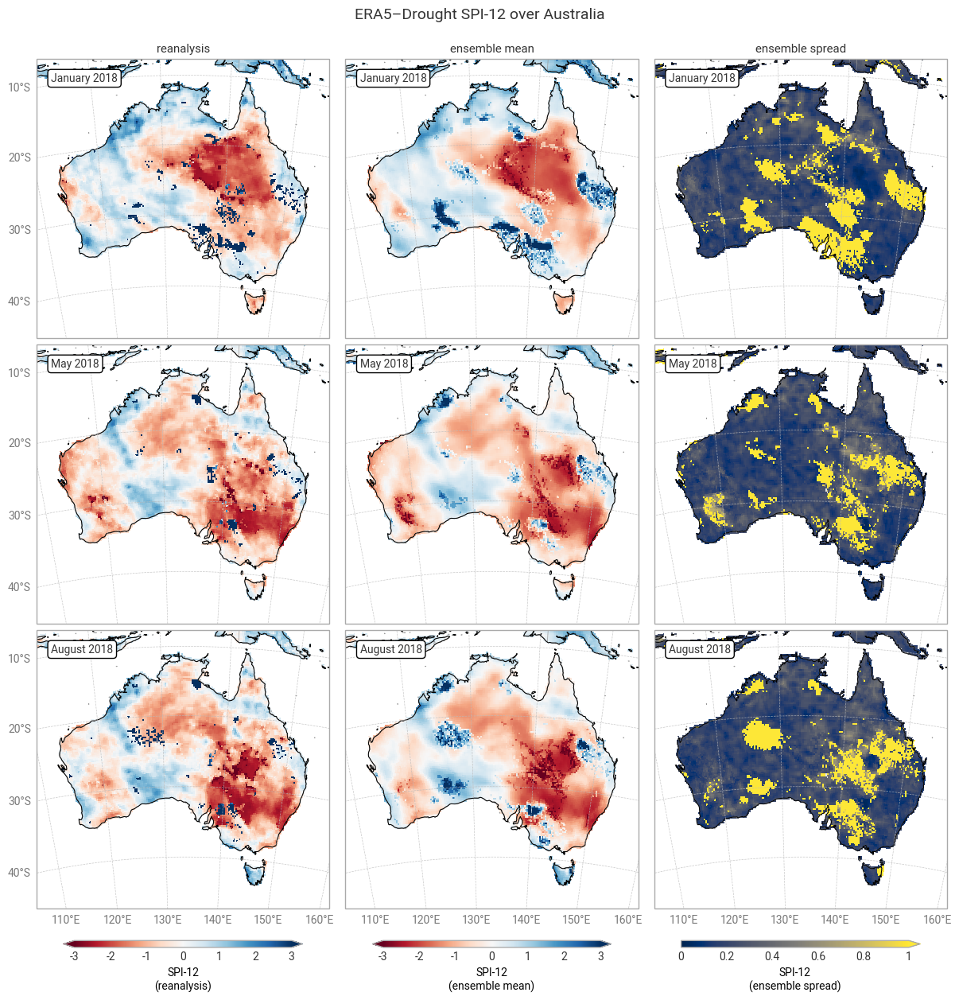
Fig. 6.1.2 SPI-12 over Australia at the start (top), middle, and end (bottom) of the selected drought event, showing the deterministic reanalysis (left) and the per-pixel mean (middle) and spread (right) of the ensemble members. Quality flags have not been applied.#
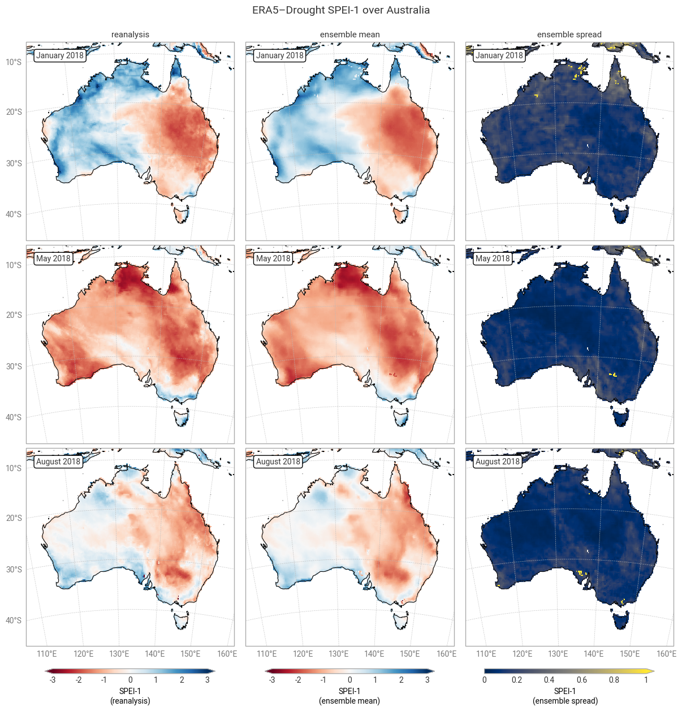
Fig. 6.1.3 SPEI-1 over Australia at the start (top), middle, and end (bottom) of the selected drought event, showing the deterministic reanalysis (left) and the per-pixel mean (middle) and spread (right) of the ensemble members. Quality flags have not been applied.#
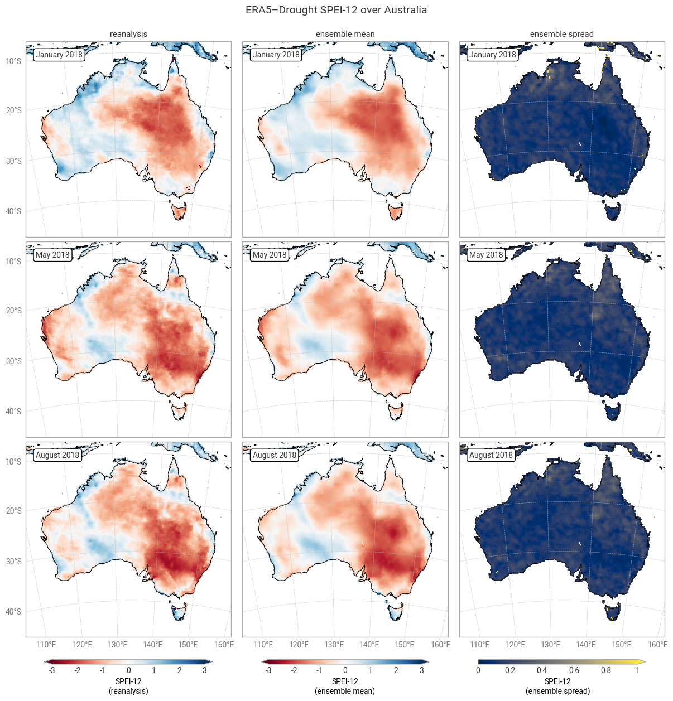
Fig. 6.1.4 SPEI-12 over Australia at the start (top), middle, and end (bottom) of the selected drought event, showing the deterministic reanalysis (left) and the per-pixel mean (middle) and spread (right) of the ensemble members. Quality flags have not been applied.#
The geospatial distributions for SPI (Figures 6.1.1–6.1.2) and SPEI (Figures 6.1.3–6.1.4) both show good agreement between the deterministic reanalysis and the ensemble mean. Both datasets generally show the same patterns with the same magnitudes, although SPI-1 and SPI-12 show differences in some areas, such as the central northern coastal area (Arnhem Land and surroundings). The most striking difference is that the ensemble mean appears much smoother, since ERA5’s ensemble members are run on a coarser grid than the deterministic reanalysis and subsequently interpolated down to the same grid in ERA5–Drought. The averaging over 10 members may cause additional smoothing of random noise.
The ensemble spread in SPI-1 and SPI-12 is very large (≥1) in some areas, particularly in January (local summer). Some of these areas correspond to noisy-looking areas in the reanalysis and ensemble mean. This pattern does not appear at all in SPEI-1 and SPEI-12, which have a spatially smooth and much smaller ensemble spread. The difference is likely due to the two indicators using different underpinning distributions (gamma vs. generalised logistic) and data (precipitation vs. precipitation – potential evaporation). This is explored further in a forthcoming notebook on the reproducibility of the ERA5–Drought dataset.
Applying the provided quality flags removes most of the noisy-appearing and high-spread areas. This includes most of the continent for SPI-1 (Figure 6.1.5) because SPI-1 is the most sensitive to dry months – which occur often in inland Australia. More data are retained for SPI-12 and SPEI (Figures 6.1.6–6.1.8), although significant gaps remain. This is particularly true for the ensemble mean and spread, which we have masked if any ensemble member is flagged at a particular pixel and timestamp to maintain statistical robustness.
In the retained areas, the ensemble spread is generally small, with the median over the entire domain and all three dates being ≤0.24 for SPI and ≤0.15 for SPEI. However, what matters most for drought monitoring is not the uncertainty in SPI or SPEI values themselves but in the corresponding drought levels. This will be explored in the next section.
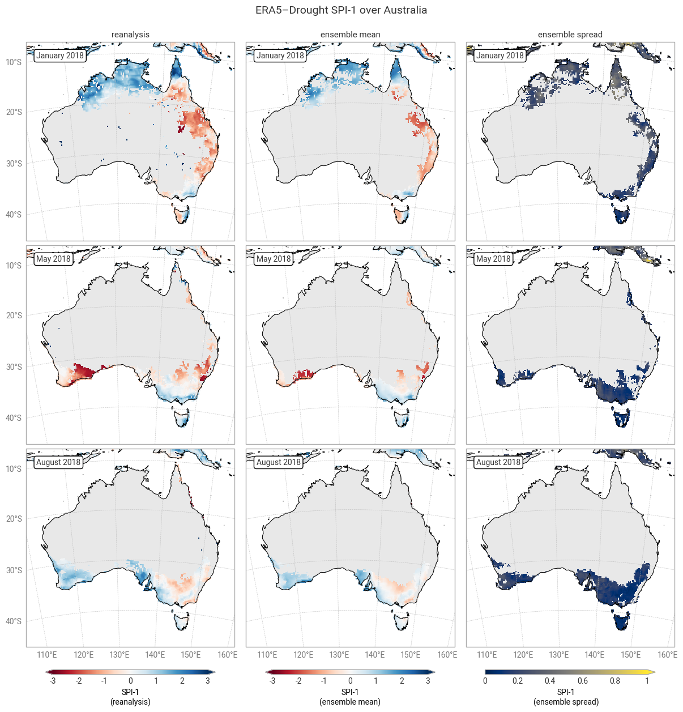
Fig. 6.1.5 SPI-1 over Australia at the start (top), middle, and end (bottom) of the selected drought event, showing the deterministic reanalysis (left) and the per-pixel mean (middle) and spread (right) of the ensemble members. Quality flags for p0 and normality have been applied.#
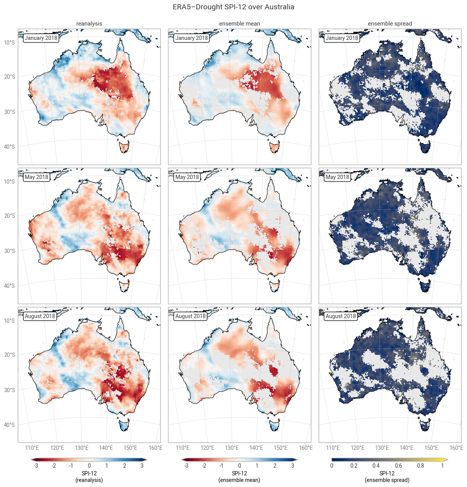
Fig. 6.1.6 SPI-12 over Australia at the start (top), middle, and end (bottom) of the selected drought event, showing the deterministic reanalysis (left) and the per-pixel mean (middle) and spread (right) of the ensemble members. Quality flags for p0 and normality have been applied.#
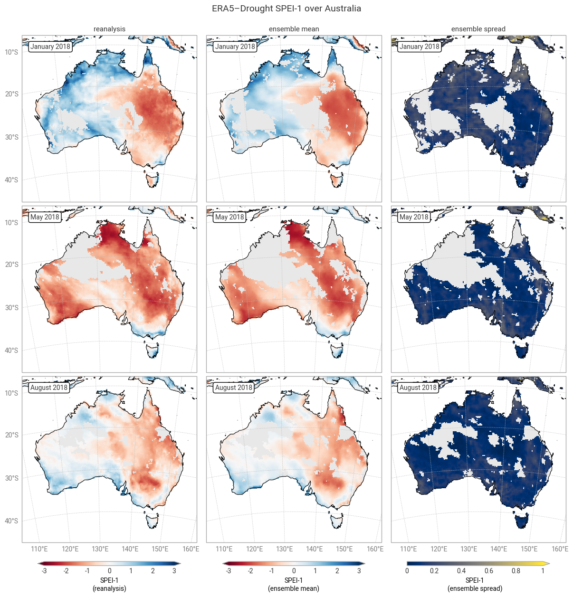
Fig. 6.1.7 SPEI-1 over Australia at the start (top), middle, and end (bottom) of the selected drought event, showing the deterministic reanalysis (left) and the per-pixel mean (middle) and spread (right) of the ensemble members. Quality flags for normality have been applied.#
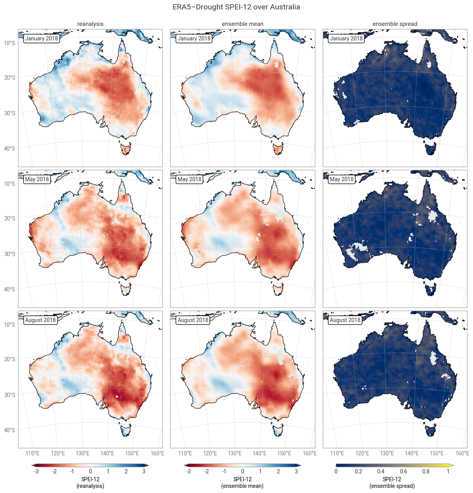
Fig. 6.1.8 SPEI-12 over Australia at the start (top), middle, and end (bottom) of the selected drought event, showing the deterministic reanalysis (left) and the per-pixel mean (middle) and spread (right) of the ensemble members. Quality flags for normality have been applied.#
4. Drought classification#
Because SPI and SPEI are defined in probabilistic terms, there is a relatively simple mapping from their values to corresponding drought categories like “mild drought” or “extreme drought” [McKee+93]. Drought monitoring generally focuses on these categories. For example, governmental mechanisms for drought relief may be triggered when SPI or SPEI dips below the threshold for one of these pre-defined categories [Steinemann+06]. The thresholds used in this quality assessment follow [Keune+25].
Here, we assess the uncertainty in declaring drought levels based on how many of the ensemble members match the reanalysis. For example, if the reanalysis suggests a severe or worse drought (SPI < –1.5), and all 10 ensemble members say the same, one can be reasonably confident in declaring a severe drought. However, if only 2 ensemble members say the same, with the other 8 suggesting only moderate (–1.0 > SPI > –1.5) or even no drought (SPI > –1.0), then the uncertainty is too large to make a definitive statement. The opposite case is also interesting – if the reanalysis says there is no drought but several ensemble members say there is, this could serve as an early warning or as the basis for a more nuanced assessment of the situation on the ground.
Most of the time (73–94% of match-ups), at least half of the ensemble members (n ≥ 5) agree with the reanalysis in declaring a drought level. This is particularly true for SPEI (≥85%), matching the smaller spread seen in the previous section. “Extremely dry or drier” SPEI-12 is an outlier, but this is likely a fluke caused by the small number of pixels falling into said category. It is rare (1–16% of match-ups) for none of the ensemble members (n = 0) to match the drought level in the reanalysis, and correspondingly it is common for none of the ensemble members to declare a drought when the reanalysis does not (e.g. out of the pixels and timestamps where SPI-1 is not moderately dry or drier, only 9% have one or more ensemble members that are moderately dry or drier). Full or near-full agreement (n ≥ 9 or 10) occurs in around half to three quarters of match-ups. In conclusion, the drought indicators in ERA5–Drought can be used with confidence in drought monitoring, and the included ensemble can be used to measure said confidence.
There are two main causes for mismatches between the ensemble and reanalysis, or equivalently for uncertainty in the declared drought levels. First, the ensemble propagates the uncertainty in the underpinning ERA5 data. Second, because the ensemble is generated at a coarser resolution than the deterministic reanalysis and then downscaled, pixels in the ensemble represent conditions in a wider spatial area. Both factors particularly affect the edges of drought areas, where the uncertainty in ERA5 straddles the threshold of a drought level and the ensemble combines drier and less dry areas. Indeed, this pattern can be seen in the geospatial distributions of matches and mismatches (Figures 6.1.9–6.1.12). Other methodological factors (discussed in the introduction) likely contribute further to the uncertainty.
The ensemble also provides new opportunities for more nuanced monitoring of drought, compared to a binary classification based on the deterministic reanalysis alone. As suggested above, additional triggers could be set based on the number of ensemble members that pass an SPI or SPEI threshold. The geospatial distributions (Figures 6.1.9–6.1.12) show that such an approach would capture a wider and smoother area of potential drought, which can then be targeted for follow-up measurements or early warnings.
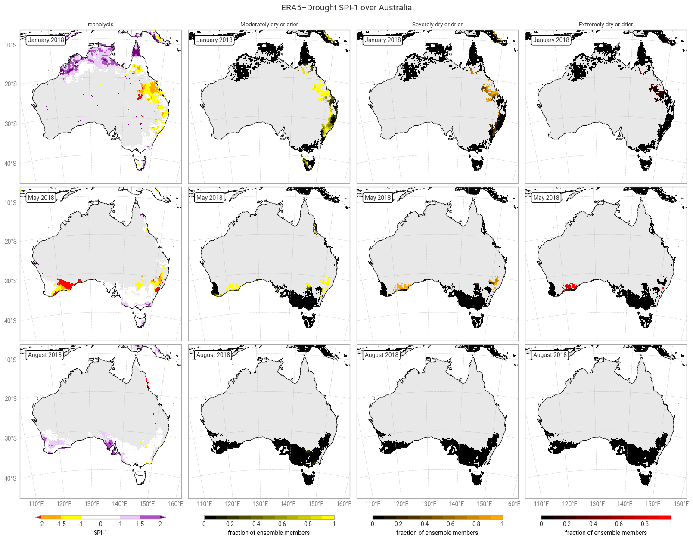
Fig. 6.1.9 SPI-1 over Australia at the start (top), middle, and end (bottom) of the selected drought event, showing the deterministic reanalysis (left) categorised following [Keune+25] and the fraction of ensemble members (out of 10) per pixel that fall into moderate-to-extreme drought categories. Quality flags for p0 and normality have been applied.#
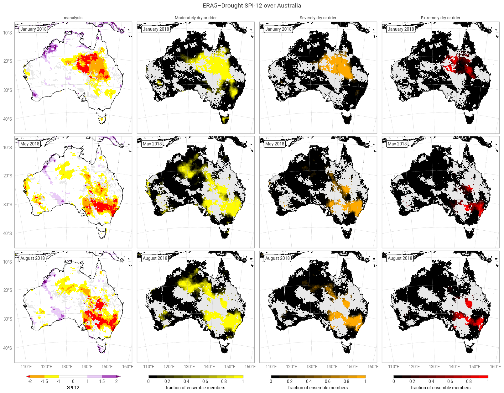
Fig. 6.1.10 SPI-12 over Australia at the start (top), middle, and end (bottom) of the selected drought event, showing the deterministic reanalysis (left) categorised following [Keune+25] and the fraction of ensemble members (out of 10) per pixel that fall into moderate-to-extreme drought categories. Quality flags for p0 and normality have been applied.#
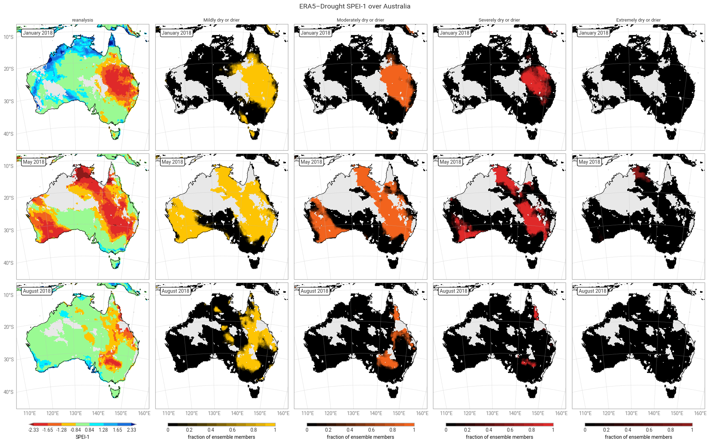
Fig. 6.1.11 SPEI-1 over Australia at the start (top), middle, and end (bottom) of the selected drought event, showing the deterministic reanalysis (left) categorised following [Keune+25] and the fraction of ensemble members (out of 10) per pixel that fall into moderate-to-extreme drought categories. Quality flags for normality have been applied.#
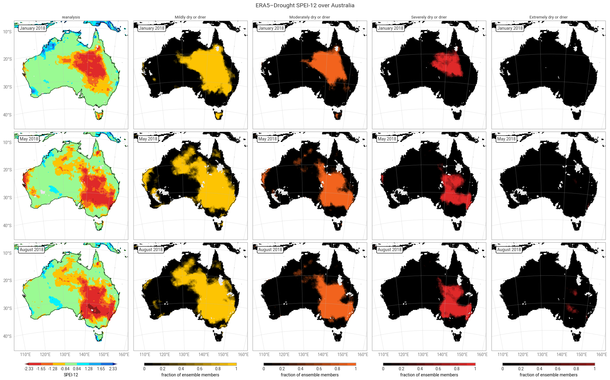
Fig. 6.1.12 SPEI-12 over Australia at the start (top), middle, and end (bottom) of the selected drought event, showing the deterministic reanalysis (left) categorised following [Keune+25] and the fraction of ensemble members (out of 10) per pixel that fall into moderate-to-extreme drought categories. Quality flags for normality have been applied.#
ℹ️ If you want to know more#
Key resources#
The CDS catalogue entries for the data used were:
Monthly drought indices from 1940 to present derived from ERA5 reanalysis: derived-drought-historical-monthly
Code libraries used:
More about drought indicators:
SPI: The relationship of drought frequency and duration to time scales
ERA5–Drought: Global drought indices based on ECMWF reanalysis
More about drought monitoring:
Developing Multiple Indicators and Triggers for Drought Plans
Drought Observatories of the Copernicus Emergency Management Service
More about ERA5:
More about uncertainty in ensemble reanalyses:
References#
[Delforge+25] D. Delforge et al., ‘EM-DAT: the Emergency Events Database’, International Journal of Disaster Risk Reduction, vol. 124, p. 105509, Jun. 2025, doi: 10.1016/j.ijdrr.2025.105509.
[ECIU+25] Energy & Climate Intelligence Unit, ‘Estimated financial losses faced by UK farmers due dry weather impacts on key arable crops’, Energy & Climate Intelligence Unit, London, United Kingdom, Dec. 2025.
[Evenflow+24] Evenflow, ‘The value generated by ERA5’, Copernicus Climate Change Service (C3S), Bonn, Germany, Dec. 2024. [Online]. Available: https://climate.copernicus.eu/sites/default/files/2024-12/Value-generated-by-ERA5-full-report.pdf
[Franch-Pardo+25] I. Franch-Pardo, P. A. F. Puig, and A. Cerdà, ‘Geospatial Technologies in Crisis Response: Analyzing the 2024 Floods in Valencia, Spain’, European Journal of Geography, vol. 16, no. 2, pp. 286–297, Aug. 2025, doi: 10.48088/ejg.i.fra.16.2.286.297.
[Hersbach+20] H. Hersbach et al., ‘The ERA5 global reanalysis’, Quarterly Journal of the Royal Meteorological Society, vol. 146, no. 730, pp. 1999–2049, May 2020, doi: 10.1002/qj.3803.
[IPCC+23] IPCC, ‘Climate Change 2023: Synthesis Report. Contribution of Working Groups I, II and III to the Sixth Assessment Report of the Intergovernmental Panel on Climate Change’, Intergovernmental Panel on Climate Change (IPCC), Geneva, Switzerland, Jul. 2023. doi: 10.59327/IPCC/AR6-9789291691647.
[Isaksen+10] L. Isaksen et al., ‘Ensemble of data assimilations at ECMWF’, European Centre for Medium-Range Weather Forecasts, Reading, UK, 636, Dec. 2010. doi: 10.21957/obke4k60.
[JCGM+08] JCGM, ‘Evaluation of measurement data — Supplement 1 to the “Guide to the expression of uncertainty in measurement” — Propagation of distributions using a Monte Carlo method’, Joint Committee for Guides in Metrology, Sevres, Paris, France, 101:2008, 2008. doi: 10.59161/JCGM101-2008.
[Keune+25] J. Keune, F. Di Giuseppe, C. Barnard, E. Damasio da Costa, and F. Wetterhall, ‘ERA5–Drought: Global drought indices based on ECMWF reanalysis’, Scientific Data, vol. 12, p. 616, Apr. 2025, doi: 10.1038/s41597-025-04896-y.
[McKee+93] T. B. McKee, N. J. Doesken, and J. Kleist, ‘The relationship of drought frequency and duration to time scales’, in Eighth Conference on Applied Climatology, Anaheim, California, USA, Jan. 1993.
[Shapiro+65] S. S. Shapiro and M. B. Wilk, ‘An analysis of variance test for normality (complete samples)’, Biometrika, vol. 52, no. 3–4, pp. 591–611, Dec. 1965, doi: 10.1093/biomet/52.3-4.591.
[Soci+24] C. Soci et al., ‘The ERA5 global reanalysis from 1940 to 2022’, Quarterly Journal of the Royal Meteorological Society, vol. 150, no. 764, pp. 4014–4048, Jul. 2024, doi: 10.1002/qj.4803.
[Steinemann+06] A. C. Steinemann and L. F. N. Cavalcanti, ‘Developing Multiple Indicators and Triggers for Drought Plans’, Journal of Water Resources Planning and Management, vol. 132, no. 3, pp. 164–174, May 2006, doi: 10.1061/(ASCE)0733-9496(2006)132:3(164).
[UNICEF+24] UNICEF, ‘Latin America and Caribbean Region Flash Update No. 2 (Climate-related crisis in the Amazon Region)’, UNICEF, Nov. 2024.
[Vicente-Serrano+10] S. M. Vicente-Serrano, S. Beguería, and J. I. López-Moreno, ‘A Multiscalar Drought Index Sensitive to Global Warming: The Standardized Precipitation Evapotranspiration Index’, Journal of Climate, vol. 23, no. 7, pp. 1696–1718, Apr. 2010, doi: 10.1175/2009JCLI2909.1.